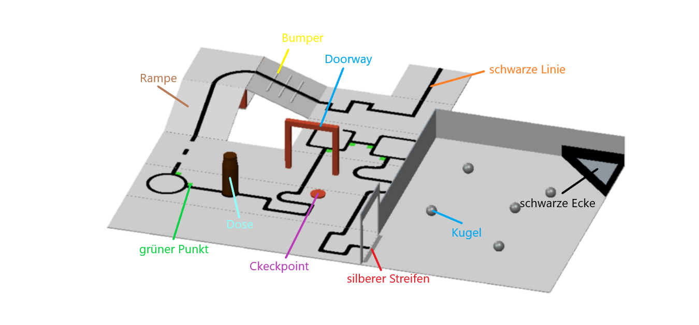

Robocup Rescue Line Team πthon πraten

schwarze Linie
Die Hauptaufgabe des Roboters ist es, der schwarzen Linie zu folgen. Die Schwierigkeiten bestehen allerdings darin,
dass es viele verschiedene Hindernisse gibt und der Roboter der Linie autonom, also ohne die Hilfe von Menschen, folgen muss.
grüner Punkt
Kommt der Roboter an einem grünen Punkt an, muss er in die jeweilige Richtung abbiegen. Ist der Punkt rechts von
der Linie muss er nach rechts abbiegen, ist er links nach links. Falls sowohl links, als auch rechts ein grüner Punkt ist, muss
der Roboter eine 180 Grad Drehung vollziehen.
Dose
Trifft der Roboter während des Linienverfolgens auf ein Hindernis, wie zum Beispiel eine Dose, so muss er die Linie verlassen,
um das Hindernis herum manövrieren, die Linie wiederfinden und ihr weiter folgen.
Bumper
Die sogenannten Bumper sind kleine Erhebungen, die der Roboter überfahren muss. Die Schwierigkeiten bestehen darin, dass
man zum einen beim Bau des Roboters an genügend Bodenfreiheit denken muss, zum anderen aber auch plötzliche Fehlwerte der
zum Boden zeigenden Farb- oder Lichtsensoren berücksichtigen sollte.
Rampe
Die Rampe besitzt eine maximale Steigung von 25 Grad, was man, wie auch die Bumper, beim Bau des Roboters berücksichtigen
sollte. Der Roboter sollte die Rampen im Idealfall ohne Probleme bewältigen und dabei weiter der Linie folgen.
Checkpoint
Verlässt der Roboter die Linie, fällt eine Rampe herunter, biegt bei grünen Punkten nicht richtig ab usw. darf man den
Roboter am zuletzt passierten Checkpoint plazieren und ihn neu starten. Die Checkpoints müssen vom Team noch vor Beginn
des Laufes festgelegt werden und dürfen später nicht mehr geändert werden.
Doorway
Doorways (=Einfahrt) müssen vom Roboter passiert werden. Wird das Tor umgeworfen, darf es nicht vom Team entfernt werden
und muss auf dem Parkours liegen bleiben, selbst wenn es den Roboter behindert. Bleibt der Roboter hängen darf er vom
letzten Checkpoint neu gestartet werden (s.o.).
silberner Streifen
Am Ende der Linie befindet sich ein silberner Streifen, der für den Roboter den Beginn des Rescuebereichs und das Ende
der Linienverfolgung kennzeichnet. Der Rescuebereich soll ein für die Menschen zu gefährliches Gebiet darstellen, in
dem der Roboter verletzte Menschen bergen muss.
Kugel
Wie oben erwähnt soll der Roboter im Rescuebereich Verletzte retten, welche durch die Kugeln dargestellt werden. Die
meisten Teams in den vergangenen Jahren nutzten dafür entweder klassische Greifer, oder andere Mechanismen, um möglichst
viele Kugeln aufzunehmen.
schwarze Ecke
Die gesammelten Kugeln sollten vom Roboter in die schwarze Ecke abgelegt werden. Je nach Anzahl und Farbe der Kugel
(silber = verletzter Mensch, schwarz = toter Mensch) und Höhe der Ecke (flach = einfach, hoch = schwer, weil die
Kugeln angehoben werden müssen) erhält das Team unterschiedlich viele Zusatzpunkte.
Schutt
Auch wenn es auf der Grafik nicht zu sehen ist, kann es vorkommen, dass auf dem gesamten Parkour oder nur auf kurzen
Passagen Zahnstocher, Dreck, Sand oder Ähnliches verstreut werden. Häufig verändert dies die Messwerte der Farb- oder
Lichtsensoren sehr stark, worauf man den Roboter vorbereiten muss.
Weiteres...
Die hier aufgeführten Beispiele und kurzen Erklärungen sind nur für einen schnellen Überblick über die Disziplien
"Rescue Line" gedacht. Falls dich das Thema interessiert, findest du unter
Downloads
die aktuellen Regeln und einen Link zur
offiziellen Robocup German Open Seite